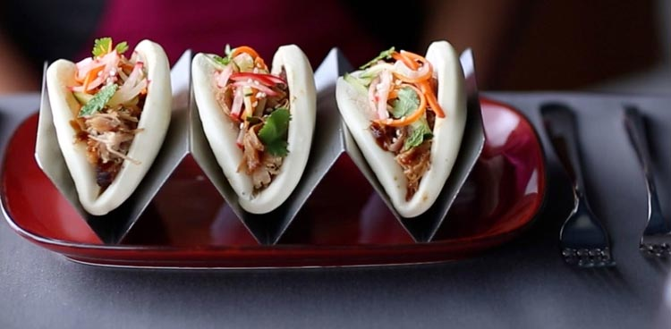
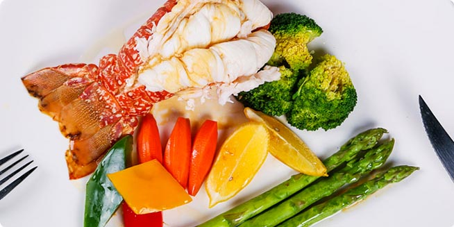
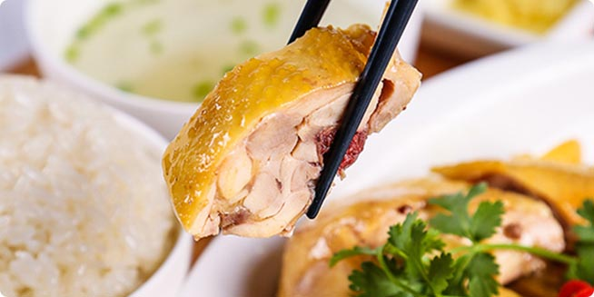
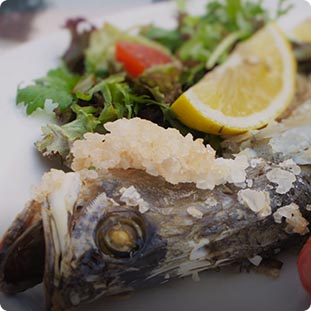

<div class="page restaurant_bgc " id="page-restaurant" >
<div class="content">
	<div class="restaurant_head">
		<div class="restaurant_headbg"></div>
		<div class="restaurant_headdt">
			<div class="restaurant_price1">¥148.0<span class="restaurant_price1xh">&nbsp;/人</span></div>
			<div class="restaurant_4f">4F
			</div>
		</div>
	</div>
	<div class="restaurant_kf" >餐厅的各个开放时间请以航程指南为准。</div>

	<div class="restaurant_ticolor">餐厅简介</div>
	<div class="restaurant_box" >
		<div class="restaurant_cont" >这是英国杰米·奥利弗在海上开的第一家餐厅可以尝到地道的意大利美食，海洋赞礼号上的意大利食谱由詹姆斯•奥利弗定制而成，地道意式美食绝对值回票价。
		<a class="restaurant_more" >更多</a>
		</div>
	</div>

	<div class="restaurant_ticolor">特色菜单</div>
	<div class="restaurant_box">
		
		<div class="restaurant_tscdt">冰爽前菜</div>
		<div class="restaurant_tscdd">田园奇艺蔬菜<br/>西班牙雪莉侵染橄榄裹草本植物油<br/>豌豆甜汤陪迷迭香和培根</div>
		
		<div class="restaurant_tscdt">饭后甜品</div>
		<div class="restaurant_tscdd">田园奇艺蔬菜<br/>西班牙雪莉侵染橄榄裹草本植物油<br/>豌豆甜汤陪迷迭香和培根</div>
	</div>

	<div class="restaurant_ticolor">预订方式</div>
	<div class="restaurant_box">
		<div class="restaurant_ydfs">上船后可以：<br/>
			1.拨打餐厅预订电话，分机7000 <br/>
			2.前往各个餐厅前台预订 <br/>
			3.通过游轮上各个区域设有的平板电脑进行预订 <br/>
			4.通过Royal iQ APP（皇家智能）预订<br/>
			5.通过餐厅服务员进行预订 <br/>
			6.如果是全家或与朋友们成团出行，可在各个餐厅前<br/>
			台，通过提供房号，进行团体预订<br/>
		</div>
	</div>

	<div class="restaurant_ticolor">猜你喜欢</div>
	<div class="restaurant_box restaurant_mg_b3">
	<div class="row">
      <div class="col-50 restaurant_glpr"><div class="restaurant_glpa">格蓝迪餐厅(收费)</div></div>
      <div class="col-50 restaurant_glpr"><div class="restaurant_glpa">索伦托披萨屋(免费)</div></div>
    </div>
	</div>
</div>
</div>